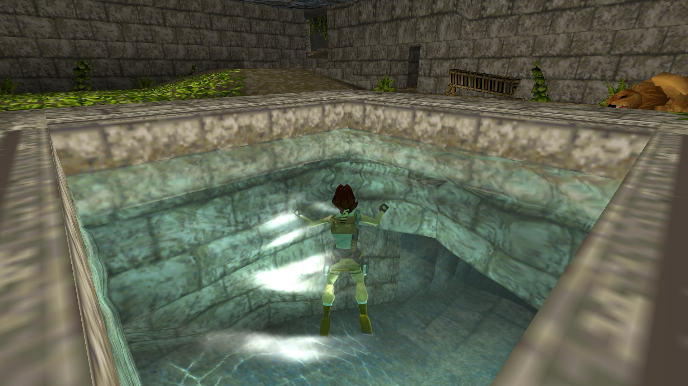

把RetroArch翻个底朝天后，我挖到了5个官方没说的隐藏玩法
RetroArch不只是个万能模拟器前端，它藏着一堆冷门设置——整数缩放让像素不再发虚、触屏按键想放哪放哪、多盘游戏自动切换。翻遍菜单才挖出来的私藏技巧。
你以为RetroArch就是个万能模拟器前端？retroarch官网把自己定位成"一站式复古游戏平台"，从官方下载拿包装上、选个Core、加载ROM、开始玩，完事。绝大多数人用到这一步就停了，菜单深处的一堆冷门设置连名字都没见过。
我最近花了一周把整个设置树从头翻到尾，从Quick Menu到Settings到每个Core的独立配置，挖出来五个官方基本不宣传的隐藏功能——用上之后体验直接翻倍。
整数缩放：让像素风不再发虚
这是我挖到的第一个宝藏。你有没有过这种经历：打开FC的《超级马里奥》，画面被拉得填满整个16:9屏幕，但原本方正的像素格变成了模糊的马赛克？
问题出在RetroArch默认用非整数缩放——原始256×240的FC画面被拉到1920×1080，不是整数倍缩放，画面就发虚。
藏得真深：Quick Menu → Video → Scaling → Integer Scaling，开关往右边一拨。画面立刻按整数倍放大，256×240变成1024×960，每个像素格方方正正，锐利得像直接盯着CRT电视看。
代价是画面不会填满屏幕，四周会留黑边。很多人以为这是bug，拼命想消黑边——但你得想清楚：黑边是保像素锐利，消黑边是保画面填满，二选一。追求像素感的复古玩家，黑边才是正确答案。
触屏覆盖层的自由度：按键想放哪放哪
手机上玩GBA或PS1，虚拟按键挡住游戏画面？几乎所有人都吐槽过，但很少有人知道RetroArch允许你拖动按键到任意位置。
操作也藏得很隐蔽：进游戏让覆盖层显示出来，长按某个按键约1秒，按键就进入了"拖动模式"——会有视觉提示（我第一次以为卡了，等了两秒才发现在抖）。然后手指拖到你想要的位置，再长按一次确认。
拖完别急着退出，到 Quick Menu → Controls → Touchscreen Overlay → Save 存一下——选"Save Game Override"就是这个游戏独有的布局，下次直接加载。
还有两个配套设置也挺好用：Opacity调到60-70%，按键半透明不挡画面；Size Scale按屏幕尺寸放大缩小，6.5寸以上的大手机开到110%手指好按。

多盘游戏自动切换：告别手动换盘的崩溃
PS1时代的大作大多拆成两三张盘——《最终幻想 VII》三张、《合金装备》两张、《GT赛车2》两张。以前我玩FF7的时候，剧情推到换盘点就慌：存个档、退游戏、找下一张盘的文件、重新加载、读档——一套操作下来剧情都忘了。
RetroArch有个没人提的方案：.chd合并。用chdman工具把多张.bin+.cue依次指定，输出一个合并的.chd文件。RetroArch所有光盘类Core原生支持多盘.chd，加载之后它会按剧情进度自动切盘，全程不用你管。
合并完一个文件就是一整个游戏，文件管理也清爽——不用再为"FF7 Disc 1"放哪个文件夹操心。
游戏级Override：告别全局设置的互相干扰
你有没有过这种困扰：PS1的《合金装备》想用4:3比例，《GT赛车》想让Core自动决定比例，但RetroArch全局只能设一个？
很多人不知道RetroArch有三层配置优先级：全局Settings → Core Override → Game Override。后者覆盖前者。
调整完某个游戏的比例、按键映射、视频设置之后，Quick Menu → 滑到底部 → Save Game Override，这个游戏的配置就独立存了，下次打开自动加载，不影响其他游戏也不影响其他Core。
同理，Save Core Override是整个Core级别的默认设置——比如所有PS1游戏都用整数缩放，就设一次Core Override搞定。这些Override的完整参数和优先级规则，retroarch文档里写得比菜单提示清楚得多。
Disc Control手动换盘：实在没合并时的救命操作
有时候手里的多盘游戏没合并成.chd，又急着玩。这时得走Disc Control的手动换盘流程——但我踩过的坑告诉你，Swap Disc之后一定要Insert新盘再Resume，别直接Close Content，不然存档可能丢。
正确姿势：剧情提示换盘时 → Quick Menu → Disc Control → Swap Disc（弹出当前光盘）→ Insert Disc（从列表选下一张）→ Resume。
前提是每张盘都得先扫进播放列表——Disc Control列出的光盘文件来自播放列表，没扫的话找不到。

一个警告：整数缩放的黑边消不掉
最后说个坑别踩：很多人开了整数缩放之后看到黑边，以为自己调错了，反复改配置、搜攻略想消黑边——别费劲了。
整数缩放的本质是"按整数倍放大，剩下的空间留空"，黑边是这个机制的必然结果。你要像素锐利就有黑边，要填满屏幕就放弃整数缩放——没有两全其美的方案。接受它，或者关掉整数缩放，二选一。
RetroArch的菜单深到什么程度？我翻了一周还有新东西冒出来。它不是个"装完就完事"的模拟器，是个值得慢慢折腾的工具——把它用透了，复古游戏的体验能翻好几倍。
想继续深挖的话，RetroArch在GitHub上持续维护源码和配置，国内的Gitee和GitCode也都有同步镜像，想跟进社区动态或研究设置原理的都能找到入口。